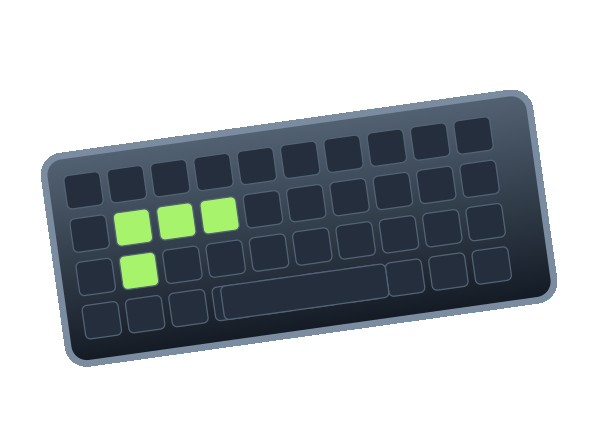
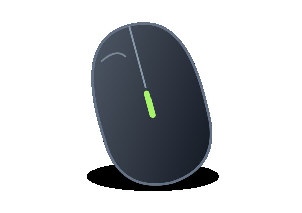
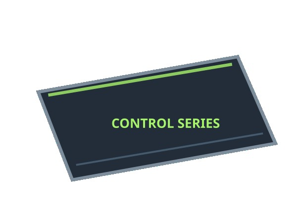
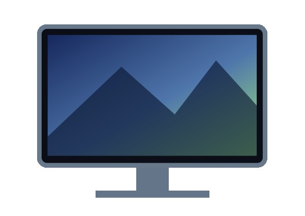

마우스, 키보드, 마우스패드, 모니터를 소개하는 웹사이트입니다.

다양한 게이밍 장비를 살펴보세요.

그립감과 무게가 중요한 장비입니다.
키감과 입력 속도를 확인해 보세요.

마우스의 움직임과 제동에 영향을 줍니다.

주사율과 화면 크기를 비교해 보세요.
손 크기와 그립법에 맞는 제품을 선택합니다.
키감과 반응 속도를 비교합니다.
주사율과 패널 종류를 확인합니다.
게이밍 장비를 쉽게 알아볼 수 있도록 만든 사이트입니다.